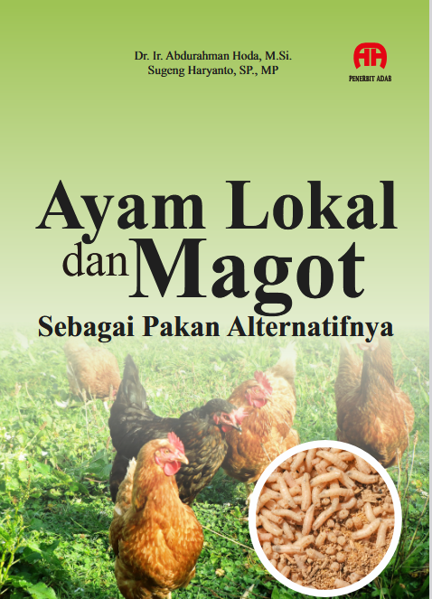

Kunci Peternakan Hemat, Mandiri, dan Berkelanjutan
Biaya pakan yang tinggi sering menjadi tantangan utama dalam budidaya ayam lokal. Padahal, ayam lokal memiliki potensi luar biasa — tahan penyakit, adaptif terhadap lingkungan, dan menghasilkan daging serta telur berkualitas. Di sisi lain, magot (larva Black Soldier Fly) muncul sebagai sumber protein alami yang mudah dibudidayakan dan ramah lingkungan.
Anto Hoda — Praktisi dan peneliti peternakan berbasis lokal di Halmahera Barat. Aktif mengembangkan konsep integrated farming system yang menghubungkan ayam lokal, magot, kambing, dan tanaman herbal dalam model pembelajaran di kampus dan masyarakat.